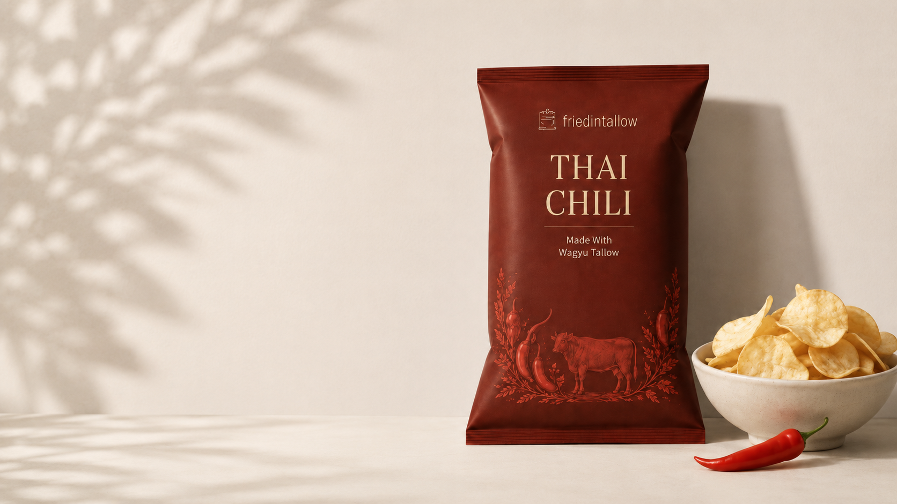
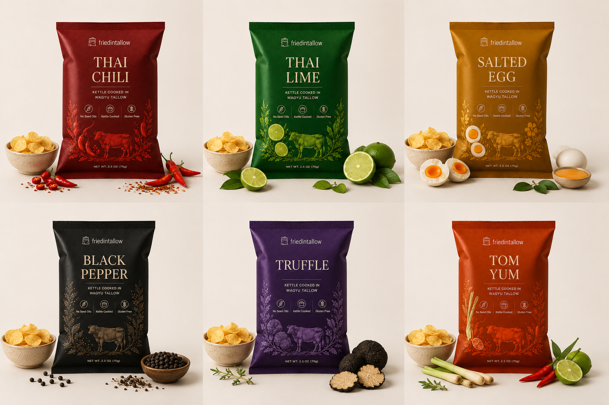

No seed oils
Our potatoes are kettle cooked in Wagyu beef tallow.

Our story
All the bold flavor and deep crunch you want—kettle cooked in Wagyu tallow, without seed oils.
Why we exist
We love chips. We just believed the cooking fat deserved as much thought as the potato and the seasoning.
Better fat. Cleaner ingredients. A crunch worth reaching for.

The difference
Before industrial seed oils became the default, cooks relied on traditional fats for their rich flavor and high-heat performance. We kettle cook our chips in Wagyu beef tallow for a crisp, satisfying finish that stands apart from the snack aisle.
No seed oils. No compromise on crunch.

Flavor first
Clean ingredients should still be exciting. Our lineup draws on loud, savory, snack-shop flavors—from bright Thai Lime and fiery Thai Chili to rich Salted Egg, Truffle, and Garlic.
Every bag is made to deliver a full-flavored crunch, not a faint suggestion.
What matters to us
Our potatoes are kettle cooked in Wagyu beef tallow.
A focused ingredient list, built around potatoes, tallow, and bold seasoning.
Small-batch kettle cooking creates the sturdy, satisfying texture we crave.
Our promise